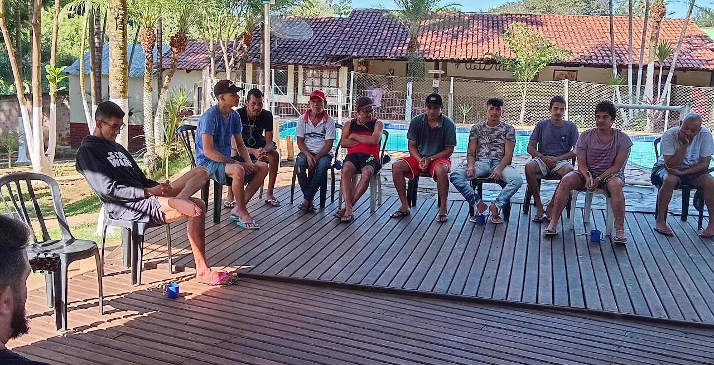
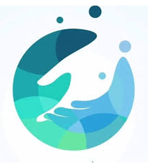
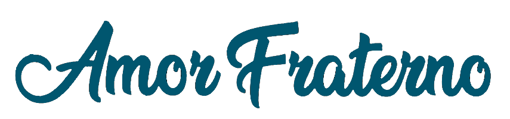
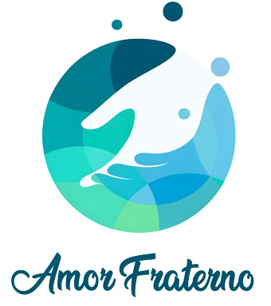
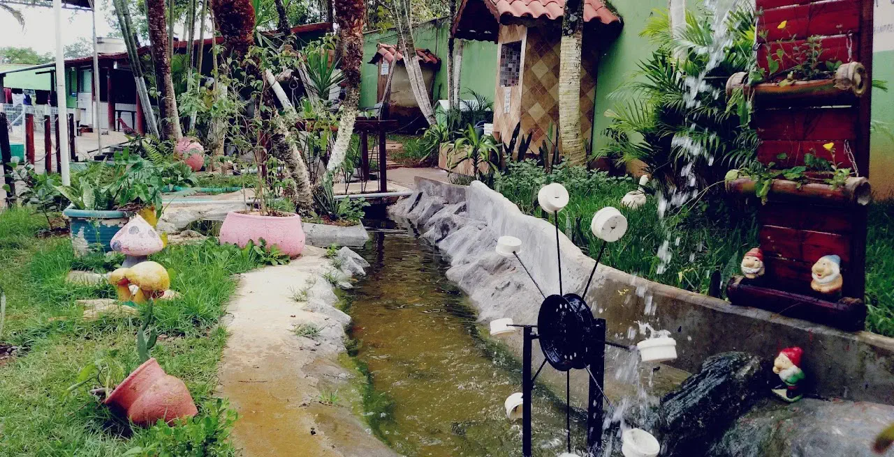
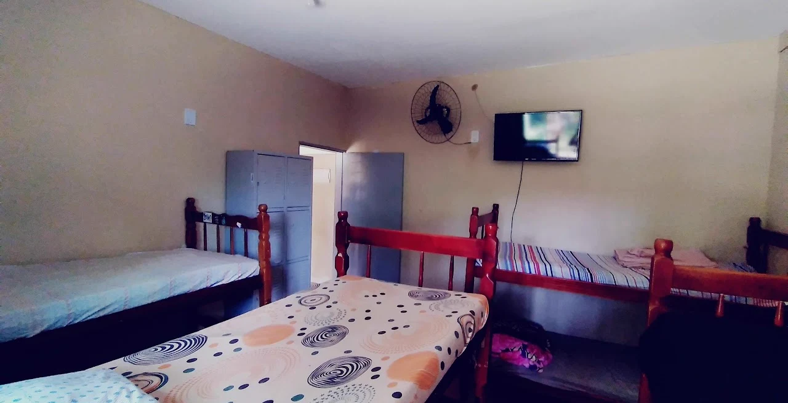
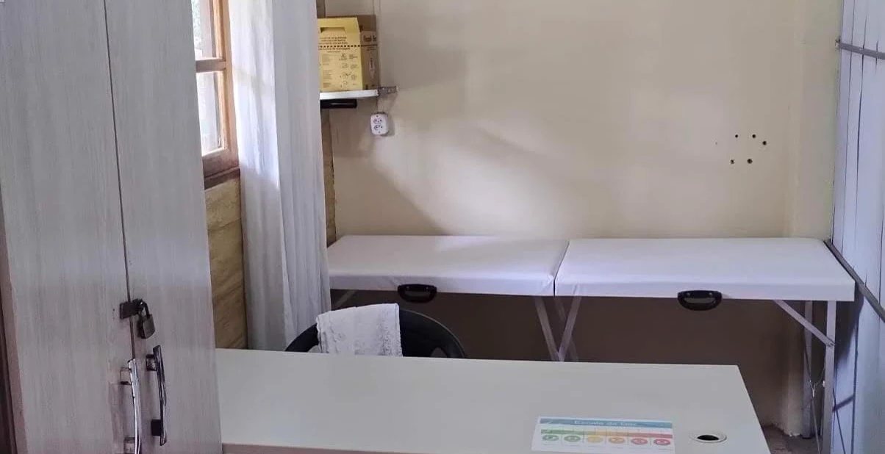
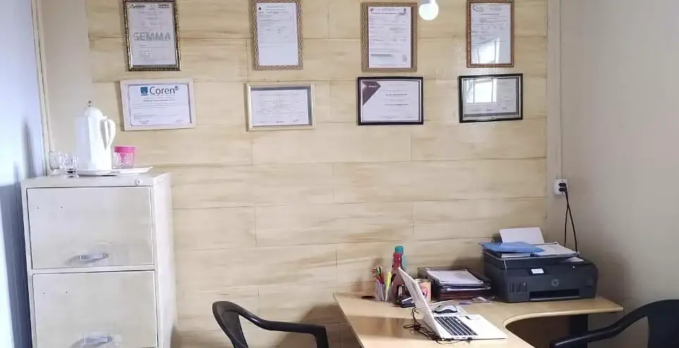
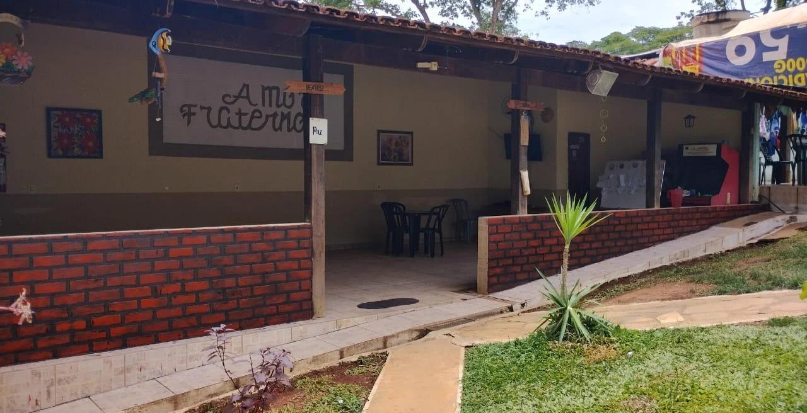
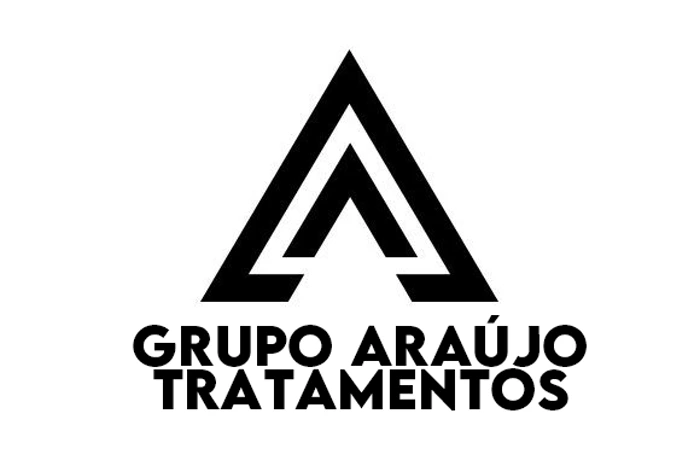

Terapia de grupo
Fortalecimento, apoio e reconstrução em conjunto.


WhatsAppTratamento humanizado para dependentes químicos e alcoólicos, com suporte 24 horas, equipe multidisciplinar e uma estrutura pensada para reconstrução.

Somos um centro terapêutico destinado à recuperação de dependentes químicos e alcoolistas. Nossa missão é oferecer recuperação de forma humanizada, com diversas áreas terapêuticas e ferramentas para que os acolhidos se mantenham abstinentes, ressignificando suas vivências e suas vidas.
A clínica combina apoio terapêutico, áreas de convivência, acomodações e acompanhamento profissional para acolher com segurança.

Fortalecimento, apoio e reconstrução em conjunto.

Ambiente seguro, tranquilo e em contato com a natureza.

Conforto e estrutura para o bem-estar dos acolhidos.

Psicólogo, médico, terapeuta e coordenadores.

Equipe preparada para acolher, orientar e guiar.

O atendimento combina acompanhamentos em grupo e individuais, fortalecendo a autonomia e o vínculo dos acolhidos com a própria recuperação.
Do primeiro contato à rotina terapêutica, a proposta é acolher com clareza, presença e acompanhamento constante.
Escuta cuidadosa para entender a história e orientar os próximos passos.
Equipe multidisciplinar organiza o plano terapêutico de forma individual.
Atividades em grupo, atendimentos individuais e convivência estruturada.
Coordenação presente 24 horas para acolher, orientar e acompanhar.
Oferecer recuperação a dependentes químicos e alcoolistas com tratamento humanizado, equipe multidisciplinar e ferramentas que priorizem autonomia, vínculo e reconstrução.
Evoluir continuamente em estrutura, equipe e processos para apoiar famílias e acolhidos com clareza desde o primeiro contato.
Grupo Vitória e Grupo Araújo prestam serviço de atendimento e orientação para famílias, ajudando no encaminhamento inicial e no entendimento do tratamento.

Canal parceiro para atendimento às famílias, orientação inicial e conversa sobre possibilidades de acolhimento.
(62) 99389-7714Escolha o canal mais adequado para iniciar a conversa. Os botões já abrem o WhatsApp com uma mensagem pronta para agilizar o primeiro acolhimento.
Atendimento humanizado para orientar famílias, acolhidos e responsáveis com clareza.
Chamar Amor Fraterno